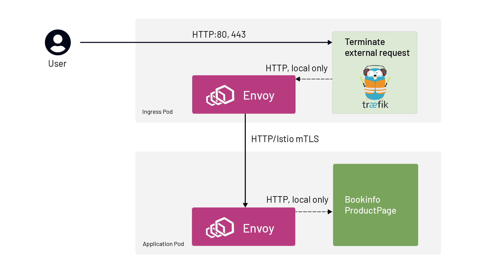

本文译自 Using Traefik Ingress Controller with Istio Service Mesh。
Istio 服务网格自带 ingress，但我们经常看到有要求使用非 Istio ingress 的客户。此前，我们已经介绍过将 NGINX 与 Istio 集成的情况。最近，我们一直在与使用 Traefik ingress 的客户合作。通过对我们之前建议的方法进行一些轻微调整，我将向你介绍如何实现 Traefik 作为 Istio 服务网格的入口网关。
流量的流向如下图所示。一旦请求从 Traefik Ingress 到达服务网格，Istio 就能够对请求应用安全性、可观察性和流量引导规则。

传入的流量绕过 Istio sidecar，直接到达 Traefik，所以请求终止在 Traefik ingress。
Traefik 使用 IngressRoute 配置重写 Host 头以匹配目的地，并将请求转发到目标服务，这是一个多步骤的过程。
- 从 Traefik Ingress 出来的请求被重定向到 Istio sidecar（由 iptables）。
- Sidecar 接收请求，对其进行加密（因为我们的 Istio
PeerAuthentication策略要求使用 STRICT mTLS），然后将请求转发到目标服务的 pod。
下面是一个端到端的部署示例，使用 Istio 的 bookinfo 演示应用，但用 Traefik ingress 来支撑整个部署。简而言之，要想在自己的环境中实现这个功能。
- 用 Istio sidecar 部署 Traefik 控制器，注释部署，使入站流量绕过 Istio Sidecar:
# Exclude the ports that Traefik receives traffic on
traffic.sidecar.istio.io/excludeInboundPorts: “80”
# Make sure Traefik controller can talk to the Kubernetes API server
traffic.sidecar.istio.io/excludeOutboundIPRanges: X.X.X.X/32
- 在应用程序命名空间中启用 Istio sidecar 注入，并部署任何你需要的 Istio 特定配置。
- 用 Traefik
Middleware对象创建IngressRoute，将主机名改写为网格识别的主机名（即集群中的服务；下文将通过一个例子详细讨论）。
使用 Traefik Ingress 的 Bookinfo
这篇文章的其余部分涵盖了部署 Istio 的 Bookinfo 示例应用程序，使用 Traefik 作为部署的 Ingress 代理。
设置环境
参考以下步骤。
- 部署一个至少 1.17 版本的 Kuberentes 集群（最小支持 Istio 1.8 版本）。我们使用 Google Kubernetes Engine 创建的集群。
gcloud container clusters create istio-traefik \
--cluster-version=1.17 \
--region <GCP region> \
--machine-type=e2-standard-4 \
--project <GCP Project> \
--num-nodes 1 \
--node-locations <GCP Zone> # i.e us-west2-b (otherwise 1 node per zone)
- 下载 Istio 1.8
curl -sL https://git.io/getLatestIstio |\
ISTIO_VERSION=1.8.1 sh -
- 在启用 HTTP 访问日志的情况下进行安装。
./istio-1.8.1/bin/istioctl install \
--set meshConfig.accessLogFile=/dev/stdout \
--skip-confirmation
部署 Bookinfo 应用
安装好 Istio 后，我们就可以开始部署我们的应用程序了。我们将使用 Istio 的 Bookinfo 应用程序进行演示。这个示例应用程序是 Istio 发行版的一部分（在./istio-1.8.1/samples/ 文件夹中）。
- 创建 bookinfo namespace。
kubectl create ns bookinfo
- 设置 label，让 sidecar 自动注入。
kubectl label namespace bookinfo istio-injection=enabled
- 在该 namespace 中部署 bookinfo 应用程序。
kubectl apply -f istio-1.8.1/samples/bookinfo/platform/kube/bookinfo.yaml -n bookinfo
确认所有的吊舱都已启动，并部署了侧车。
启用 Istio mTLS 为应用程序命名空间的服务到服务通信。
cat <<EOF | kubectl apply -f -
apiVersion: security.istio.io/v1beta1
kind: PeerAuthentication
metadata:
name: default
namespace: bookinfo
spec:
mtls:
mode: STRICT
EOF
部署 Traefik 入口
现在是时候按照 v2.3 文档来部署 Traefik 了（本篇文章中 Traefik 的最新版本是 2.3，但如果你根据你的版本调整了 IngressRoute 和 Middleware 资源，它将适用于任何版本的 Traefik）。
- 部署 Traefik。请注意，Traefik 网站上的文档部署有一些修改（代替 Traefik 文档中的默认命名空间，将指定 bookinfo 命名空间）。该文件可以在这里访问并应用如下。
$ kubectl apply -f http://bit.ly/Traefik-CRDs-and-Roles
customresourcedefinition.apiextensions.k8s.io/ingressroutes.traefik.containo.us created
customresourcedefinition.apiextensions.k8s.io/middlewares.traefik.containo.us created
customresourcedefinition.apiextensions.k8s.io/ingressroutetcps.traefik.containo.us created
customresourcedefinition.apiextensions.k8s.io/ingressrouteudps.traefik.containo.us created
customresourcedefinition.apiextensions.k8s.io/tlsoptions.traefik.containo.us created
customresourcedefinition.apiextensions.k8s.io/tlsstores.traefik.containo.us created
customresourcedefinition.apiextensions.k8s.io/traefikservices.traefik.containo.us created
clusterrole.rbac.authorization.k8s.io/traefik-ingress-lb created
clusterrolebinding.rbac.authorization.k8s.io/traefik-ingress-lb created
- 为传入的请求创建一个服务。该服务将接收外部 IP 地址。(Traefik 网站上的例子有一些变化)。
- 需要指定 Namespace。
- 只发布两个端口：80 用于 Bookinfo 应用，8080 用于 Traefik 管理。
- 服务需要使用的标签（traefik-ingress-lb）指向 Traefik。
Type: Loadbalancer是为了告诉 GCP 给服务分配一个外部 IP。
cat <<EOF | kubectl apply -f -
apiVersion: v1
kind: Service
metadata:
name: traefik
namespace: bookinfo
spec:
ports:
- protocol: TCP
name: web
port: 80
- protocol: TCP
name: admin
port: 8080
selector:
app: traefik-ingress-lb
type: LoadBalancer
EOF
- 确认服务的创建符合预期。
$ kubectl get svc traefik -n bookinfo
NAME TYPE CLUSTER-IP EXTERNAL-IP PORT(S) AGE
traefik LoadBalancer 10.35.244.227 35.236.XXX.XXX 80:31718/TCP,8080:31334/TCP 2m6s
- 正如 Traefik 网站中介绍的，需要应用
ServiceAccount的 Kubernetes 部署。除了名称和命名空间，网站示例还引入了以下变化。
- 为了简单起见，删除了安全端点。
Accesslog：增加了=true，因为没有这个值就不行。Log.level设置为 DEBUG 将帮助我们看到发生了什么。- 增加了
traffic.sidecar.istio.io注释（更多细节请参考之前提到的 Tetrate NGINX 文章）。
KUBERNETES_SVC_IP=$( kubectl get svc kubernetes -n default -o jsonpath='{.spec.clusterIP}' )
cat <<EOF | kubectl apply -f -
apiVersion: v1
kind: ServiceAccount
metadata:
namespace: bookinfo
name: traefik-ingress-lb
---
kind: Deployment
apiVersion: apps/v1
metadata:
namespace: bookinfo
name: traefik-ingress-lb
labels:
app: traefik-ingress-lb
spec:
replicas: 1
selector:
matchLabels:
app: traefik-ingress-lb
template:
metadata:
labels:
app: traefik-ingress-lb
annotations:
traffic.sidecar.istio.io/excludeInboundPorts: "80"
traffic.sidecar.istio.io/excludeOutboundIPRanges: ${KUBERNETES_SVC_IP}/32
spec:
serviceAccountName: traefik-ingress-lb
containers:
- name: traefik-ingress-lb
image: traefik:v2.3
args:
- --api.insecure
- --accesslog=true
- --providers.kubernetescrd
- --entrypoints.web.address=:80
- --log.level=DEBUG
ports:
- name: web
containerPort: 80
- name: admin
containerPort: 8080
EOF
- 确认 Traefik 在 Bookinfo 命名空间的部署。
$ kubectl get pods -n bookinfo -l app=traefik-ingress-lb
NAME READY STATUS RESTARTS AGE
traefik-ingress-lb-669fc4b77d-74mpx 2/2 Running 0 2m35s
- 获取服务 IP 并记录 BOOKINFO_IP 变量值。
BOOKINFO_IP=$(kubectl -n bookinfo get service traefik -o jsonpath='{.status.loadBalancer.ingress[0].ip}')
- 测试来自 Ingress 80 端口的响应，看看它是否有通往应用的路由。
curl -I $BOOKINFO_IP
确保它返回 “404 Not Found”—— 由于尚未实施 Ingress 规则，所以预计会有 not-200 响应。
配置 Traefik Ingress 规则
- Traefik 的
Middleware头重写功能将使 Istio 服务网格正常运行。本例中，需要将主机定义为productpage.bookinfo.svc。头可以根据 Traefik 文档来定义。
cat <<EOF | kubectl apply -f -
apiVersion: traefik.containo.us/v1alpha1
kind: Middleware
metadata:
name: productpage-header
namespace: bookinfo
spec:
headers:
customRequestHeaders:
Host: productpage.bookinfo.svc
EOF
- 最后一步是指定 ingress 请求的路由逻辑，因为本文的重点是服务网格集成。这个定义非常简单，将所有到达 80 端口的入站请求转发到名为 ProductPage 的前沿 bookinfo 应用服务（服务于 9080 端口的流量）。它还使用了上一步创建的中间件对象。
cat <<EOF | kubectl apply -f -
apiVersion: traefik.containo.us/v1alpha1
kind: IngressRoute
metadata:
name: productpage
namespace: bookinfo
spec:
entryPoints:
- web
routes:
- match: PathPrefix(`/`)
kind: Rule
middlewares:
- name: productpage-header
services:
- name: productpage
port: 9080
EOF
验证部署功能
- 重新测试应用程序的响应。
curl -I $BOOKINFO_IP
我们会收到 “200 OK “的回复。也可以通过浏览器测试，使用 http://<BOOKINFO_IP>/productpage。
- 如果在
http://<BOOKINFO_IP>/productpage，就会返回应用响应。
- 通过查询 istio-proxy 容器的 bookinfo 命名空间中的 Traefik pod 日志，可以在 istio-proxy 日志中看到向应用程序发出的请求。没有传入请求，因为它们直接到达 Traefik Ingress。
TRAEFIK_POD=$( kubectl -n bookinfo get pods -l app=traefik-ingress-lb -o jsonpath='{.items[0].metadata.name}' )
kubectl -n bookinfo logs ${TRAEFIK_POD} -c istio-proxy
请注意，请求处理后，日志需要几秒钟才能显示。只有在 Istio 安装时使用 meshConfig.accessLogFile=/dev/stdout 标志的情况下，才会显示日志。
[2021-01-05T20:13:55.015Z] "GET /productpage HTTP/1.1" 200 - "-" 0 5179 1069 1069 "10.32.0.1" "Mozilla/5.0 (Windows NT 10.0; Win64; x64) AppleWebKit/537.36 (KHTML, like Gecko) Chrome/87.0.4280.88 Safari/537.36" "4bd443e9-1a2e-4d30-b1e3-398a5005f240" "productpage.bookinfo.svc" "10.32.0.18:9080" outbound|9080||productpage.bookinfo.svc.cluster.local 10.32.0.19:51810 10.32.0.18:9080 10.32.0.1:0 - default
[2021-01-05T20:13:56.301Z] "GET /static/bootstrap/fonts/glyphicons-halflings-regular.woff2 HTTP/1.1" 200 - "-" 0 18028 3 3 "10.32.0.1" "Mozilla/5.0 (Windows NT 10.0; Win64; x64) AppleWebKit/537.36 (KHTML, like Gecko) Chrome/87.0.4280.88 Safari/537.36" "8cb44552-c3c8-45dd-8674-4af207ce1648" "productpage.bookinfo.svc" "10.32.0.18:9080" outbound|9080||productpage.bookinfo.svc.cluster.local 10.32.0.19:51810 10.32.0.18:9080 10.32.0.1:0 - default
总结
本文演示了如何将 Traefik Ingress 作为 Istio 服务网格的入口点。这里应用的基本方法应该是适用的，即使你的环境与我们例子中使用的环境不同。当引入服务网格时，Traefik / 服务网格集成可以在不同的云中成功实施，并使用全新或现有（也就是棕地）部署 Traefik。最终，您将获得两者最好的东西：Istio 服务网格与您所选择的 Ingress 控制器相集成！